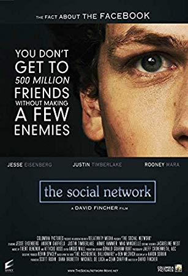
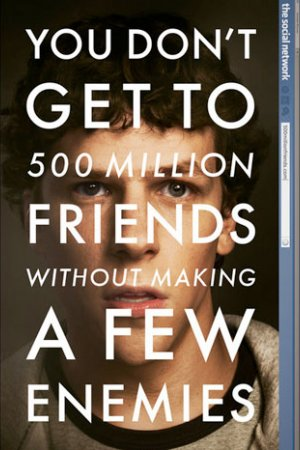

This is a Social Networking Site.
Movie related to Facebook: Click Me!

The Social Network is a 2010 American biographical drama film directed by David Fincher and written by Aaron Sorkin. Adapted from Ben Mezrich's 2009 book The Accidental Billionaires: The Founding of Facebook, a Tale of Sex, Money, Genius and Betrayal, the film portrays the founding of social networking website Facebook and the resulting lawsuits. It stars Jesse Eisenberg as founder Mark Zuckerberg, along with Andrew Garfield as Eduardo Saverin, Justin Timberlake as Sean Parker, and Armie Hammer as Cameron and Tyler Winklevoss. Neither Zuckerberg nor any other Facebook staff were involved with the project, although Saverin was a consultant for Mezrich's book.The film was released in the United States by Columbia Pictures on October 1, 2010.
The Social Network garnered considerable acclaim, with critics praising its direction, screenplay, acting, editing and score. The film appeared on 78 critics' Top 10 lists for 2010; of those, 22 had the film in their number-one spot, the most of any film in its year. The film was also chosen by the National Board of Review as the best film of 2010.
